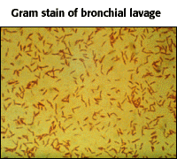

Case Study 1
A 64-year old male with fever, malaise, and cough.
Gram positive is the wrong answer!
| What do you know about the organism from examination of the Gram stain? | |||||
|  |
|
||||
Case Study 1A 64-year old male with fever, malaise, and cough.
Gram positive is the wrong answer!
|
||||||||


http://www.biology.arizona.edu
All contents copyright © 1998. All rights reserved.